| 日付 | 2008年9月21日（日） - 2008年9月23日（火） | ||||||
|---|---|---|---|---|---|---|---|
| 山域 | 妙高周辺 | ||||||
| メンバー | 単独 | ||||||
| 山行形態 | 前夜発2泊3日テント泊 | ||||||
| アクセス | 電車、バス | ||||||
| ルート (Map) |
|
3日目
予定通り朝4時に起床。
今朝はテントをたたく雨音もなく、星空が見えている。
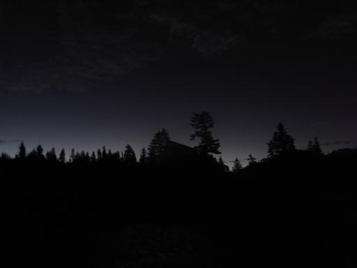
4:55 高谷池ヒュッテを出発する。
少し前まで5時だともう明るかったのに、今はヘッドライトがないと歩けない。
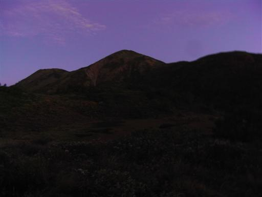
30分も歩くと、空がだいぶ明るくなってきた。
周りに広がる頸城の山や北アルプスがよく見えている。
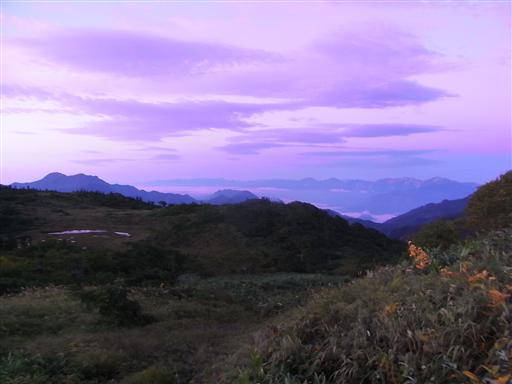
5時半頃、地平線の彼方から太陽が頭を出す。
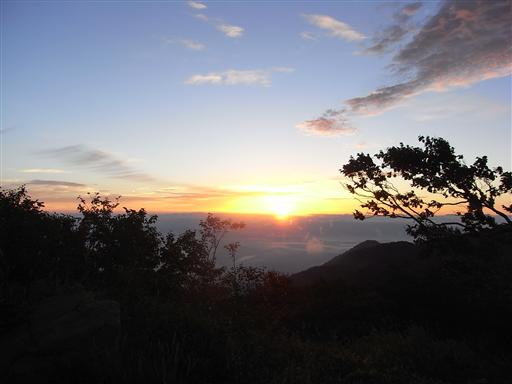
北アルプスの稜線が赤く染まっている。
右手にある一番目立つピークが白馬岳だ。
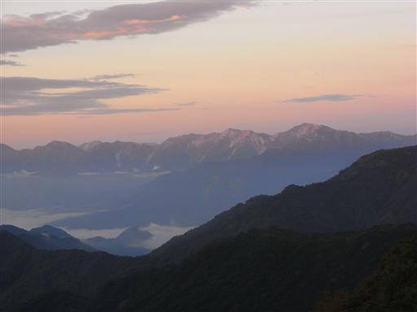
ライチョウ平に到着。
アルプスだけでなく、こんなところにも雷鳥がすんでいるのだろうか？
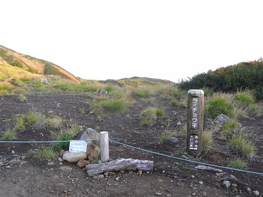
赤く染まった火打山の斜面を登っていく。
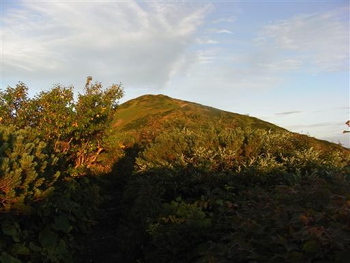
振り返ると丸い頭の妙高山がよく見えている。
今日だと妙高山からの展望も最高だろう。
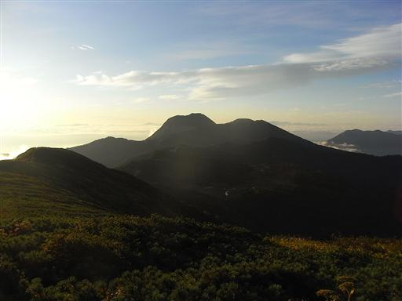
目を右に転じると、高妻山が大きく聳えている。
この山もこの辺りを代表する名峰だ。
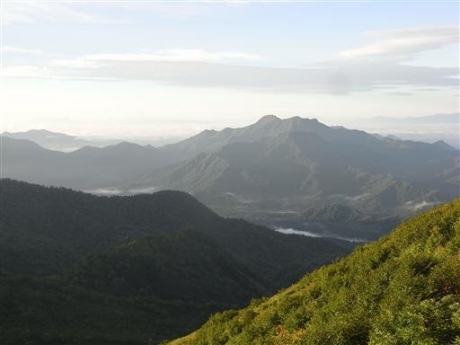
上空にはすじ雲が広がっている。
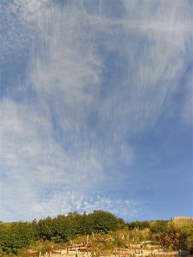
6:14 火打山山頂到着。標高2462m。
この山は以北最高峰（日本でこの山より北にこれ以上高い山はない）の山として知られている。
確かにアルプス以外でこの標高は立派だ。
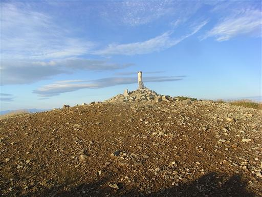
早朝、本日一番乗りの山頂からは360度の見事な展望が広がる。
北アルプスは槍、穂高まで見えている。
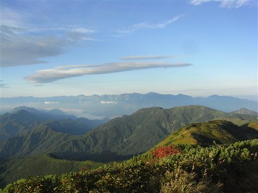
遥か彼方には、志賀高原、浅間山、富士山、奥秩父、八ヶ岳、南ア、中アなどが
シルエットとなって見えている。
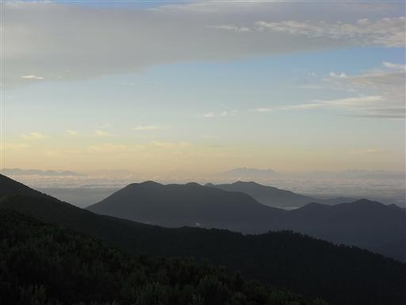
北方には、日本海上空にどこまでも雲海が広がっている。
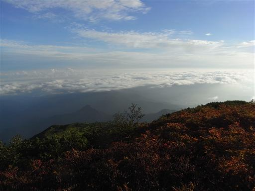
ゆっくり展望を楽しんだ後、静かな山頂を辞し、焼山を目指す。
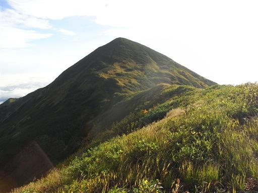
目の前に見えるドーム型の焼山は、どこを見ても急斜面。
一体この山のどこに登山道が付いているのか見当も付かない。
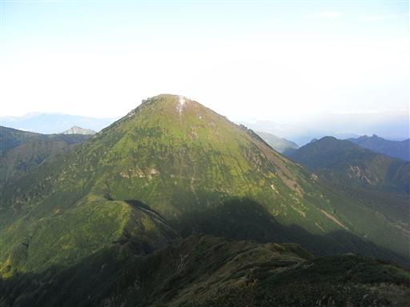
焼山に続く登山道は細く、そして険しい。
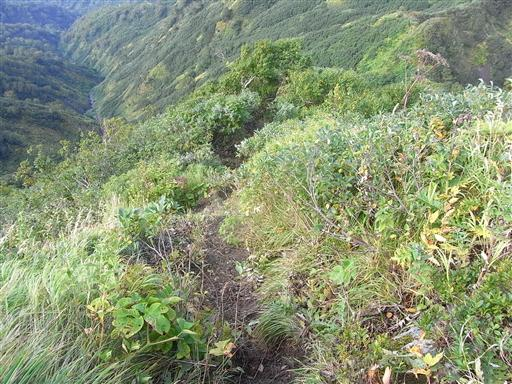
火打山から大きく下って、最低鞍部付近から焼山を見上げる。
ここからまたこの斜面を登り返さなくてはならない。
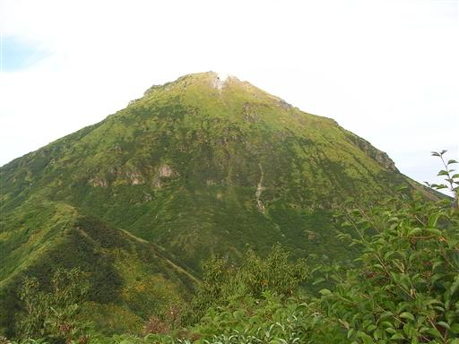
登山道は何の工夫もなく、一直線に山頂に向かって伸びている。
土の急斜面はよく滑り、周りのツルや草をつかんで這い上がる。
この道は高谷池ヒュッテから軽装で往復する人が多いが、
重い荷物を背負っていると非常に登りにくい。
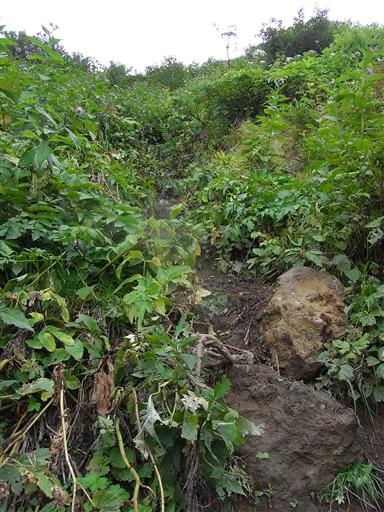
周囲にはアザミの花が無数に咲いている。
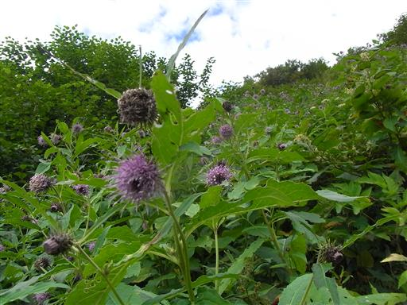
地形的特徴がない登山道なので、背後の火打山を見て大体の高度を確認する。
この火打山は妙高山、焼山とはずいぶん違う形をしている。
火山に囲まれ、火打山という名前も付けられているが、この山は火山ではないらしい。
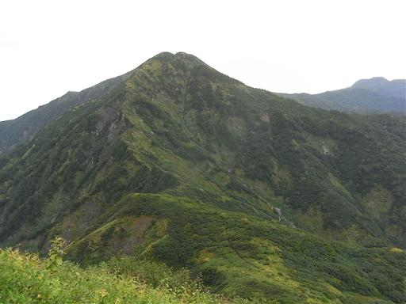
シラタマノキとアカモノの実があちらこちらで見られる。
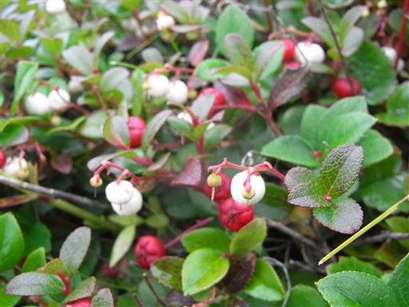
標高をあげていくと草木が少なくなってきて、岩石がむき出しになっている。
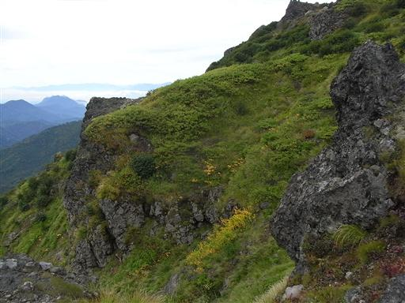
斜面の上に山頂部が見えてきた。活火山・焼山の山頂部までもうすぐだ。
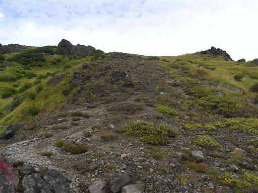
火口の縁に到達すると、そこには荒々しい爆裂火口が広がっている。
3000年ほど前に活動が始まった非常に新しい火山らしい。

今でも噴煙を上げていて、辺りには硫黄の臭いが充満している。
この山は2006年に立ち入り禁止が解除されたが、まだ一般的に登られている山ではない。
ただ、噴煙の量は那須岳に比べると少ないように見える。
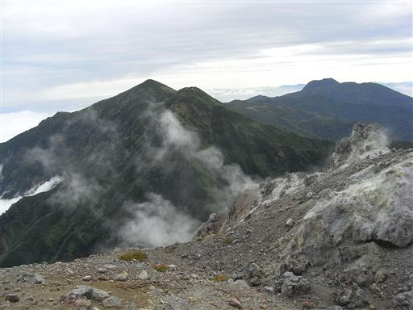
火口の縁を歩いていく。一番高くなっているところが山頂だ。
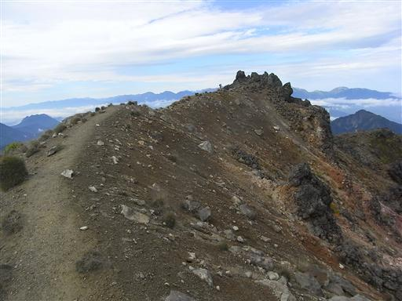
8:49 焼山山頂到着。標高2400m。
山頂で休憩していると、反対方向から単独行者が登ってきた。
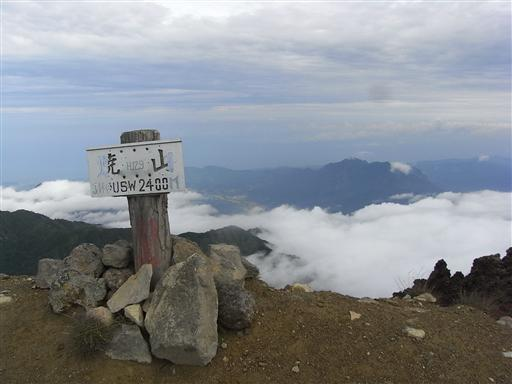
焼山山頂も絶好の展望台。少し雲が出てきたが北アルプスがきれいに見えている。
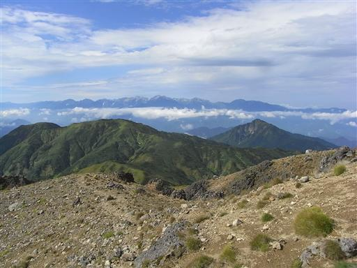
すぐ近くに、標高は低いが見事な岩壁を持つ雨飾山が聳えている。
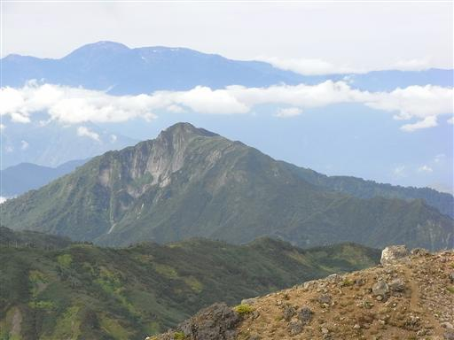
眼下には大きな噴火口が見える。
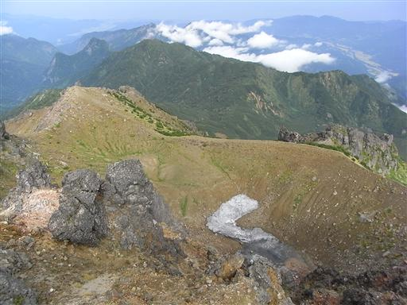
ここからは、岩が散乱している登山道を下って行く。
高谷池ヒュッテからは焼山へのピストン登山者が多く、
小屋の人もこの下山道の整備状況などの情報は持っていなかった。
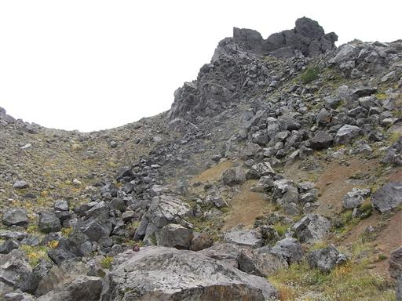
下山中にもこの道を登ってくる人とすれ違う。
山頂で出会った人を含め、今日この道で3名と出会った。いずれも単独行者だ。
小屋の人が把握していないだけで、意外にもこの道はよく使われているらしい。
いずれも焼山往復のようで、高谷池ヒュッテの方には向かわないようだ。
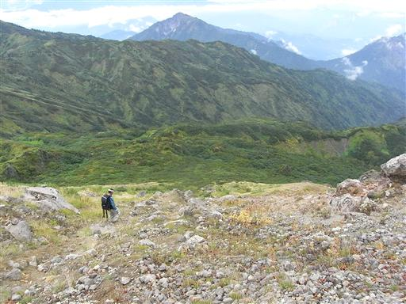
標高を下げていくと、植物が繁茂した展望のない道になる。
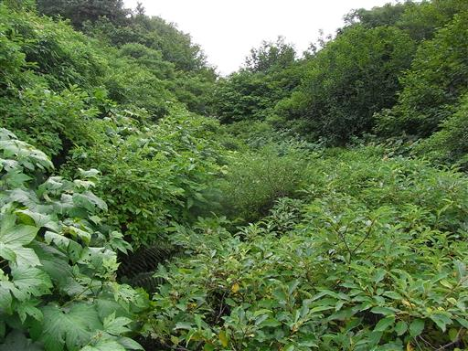
泊岩。山腹にある避難小屋。
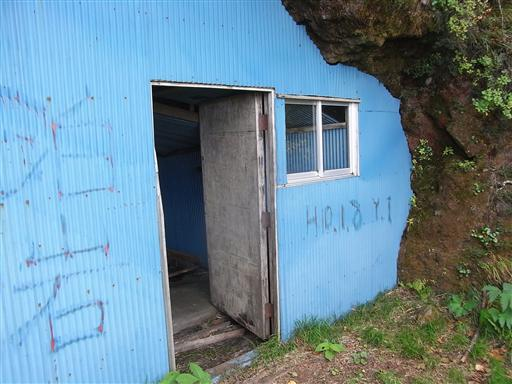
内部は床板が抜け落ちているので、本当の非常事態以外は使い物にならない。
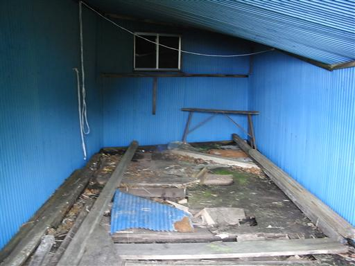
ベニバナイチゴの実。おいしそうな色をしている。
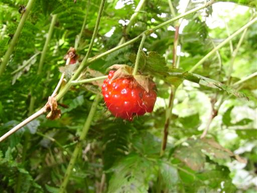
大きな沢に下りてくる。両側の斜面は非常に急峻だ。
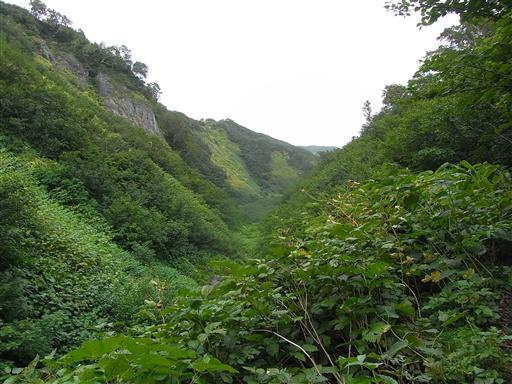
ズダヤクシュ。非常に小さな花。
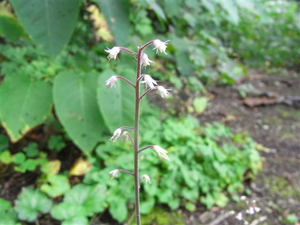
登山道は斜面をトラバースするように付けられている。
登山道を分断するように、大きな溝が目の前に現れる。
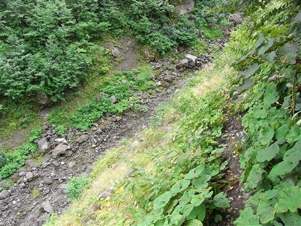
この溝を渡らないと先には進めない。両側の斜面は急で非常に危険。
この谷は地獄谷と名付けられている。
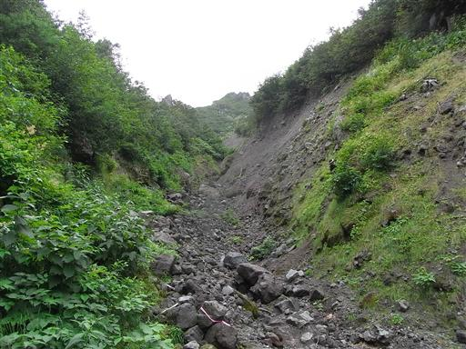
少し進むと、続いて大谷が現れる。こちらも地獄谷に続いて危険箇所だ。
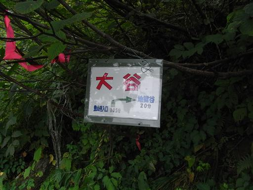
両側は砂に覆われた非常に急な斜面。
固定ロープが1本設置されている。
それが無いととても上り下りできない。
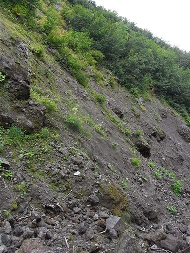
ところどころにある大きな溝以外は、尾根と沢がはっきりしない斜面が広がっている。
その斜面を延々と下っていく。
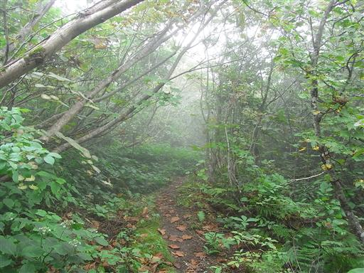
風穴。妙高山登山中にも同じものがあった。
ここも手をかざしてみると、微かに中から風が吹いている。
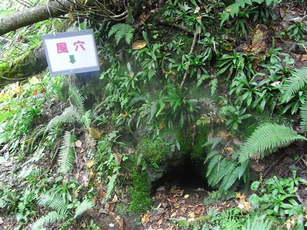
登山道入口に到着する。ここからは2時間近くの車道歩き。
この林道は一般車の通行が許可されていない。
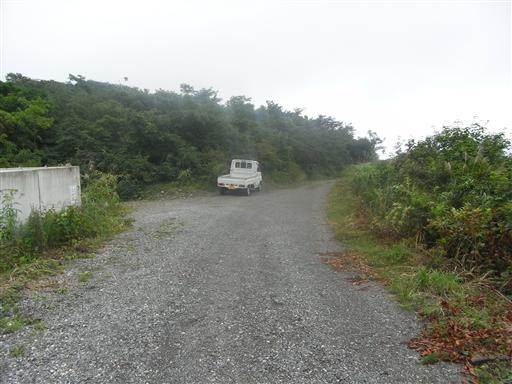
焼山山頂で会った人と一緒に長い車道を下っていく。
ここはもうすでに雲の下だ。
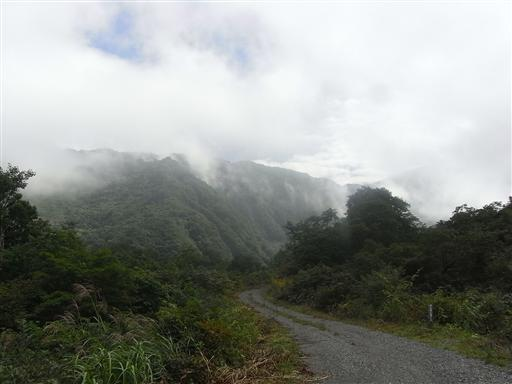
谷に広がる集落が眼下に見えてきた。
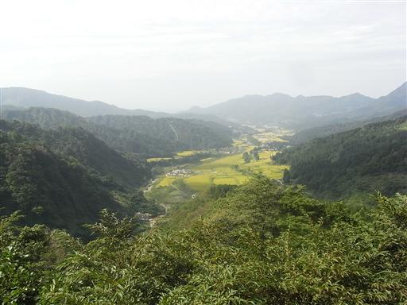
13:30 笹倉温泉バス停の少し手前にある駐車場に到着。
下山中の同行者に糸魚川駅まで送っていただく。
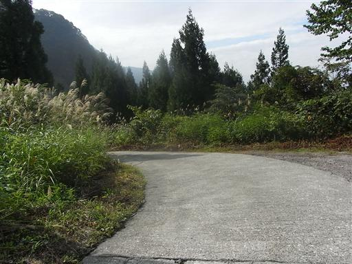
昨日焼山を下山して今日登る予定にしていた鉾ヶ岳が大きく見えている。
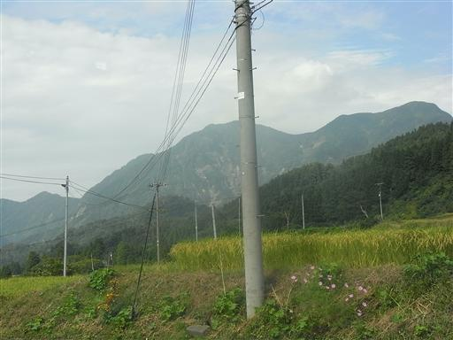
糸魚川駅に到着する。
この辺りのバスの便は非常に少ないので大いに助かる。
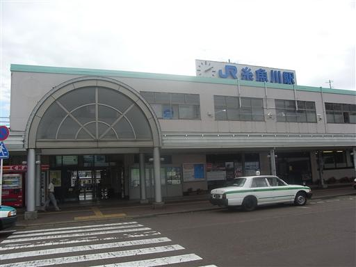